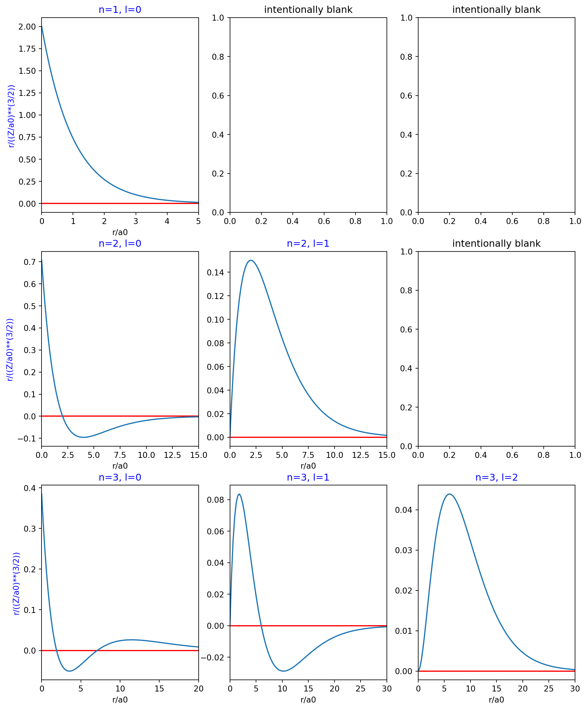
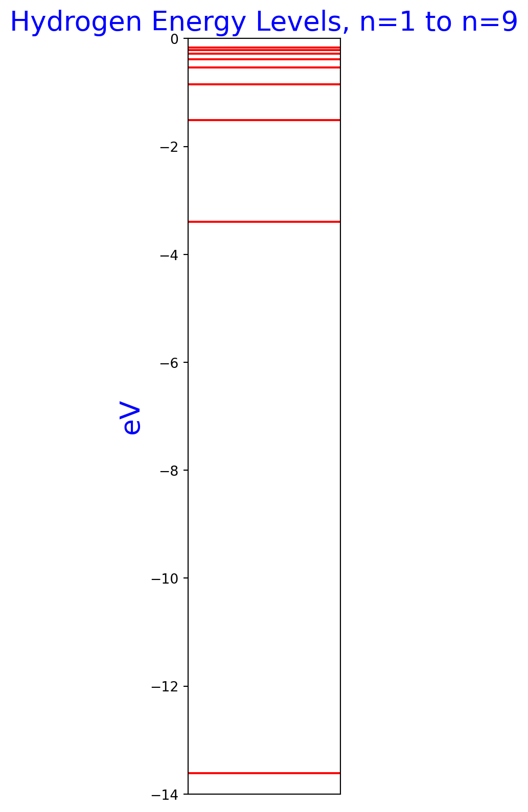
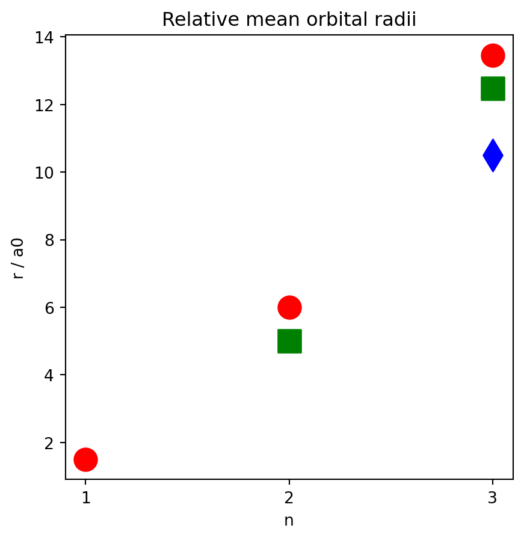

import numpy as np
import matplotlib.pyplot as plt
from matplotlib import cm
from math import exp, sqrt, pi, cos, sin
from scipy.integrate import dblquad, tplquad, quad
import cmath
class HydrogenicAtom:
"""
This class models the wavefunctions and energy levels of a hydrogenic atom.
It assumes an infinitely heavy nucleus, so the mass is that of the
electron.
Masses are in kg, distances are in m
This whole class uses complex numbers and math functions.
"""
def __init__(self, n=1, l=0, ml=0, z=1):
"""
This sets some instance attributes and a few constant used throughout the
class.
Leave z at 1 for hydrogen.
Parameters
----------
n: int
Principal quantum number.
l: int
Orbital angular momentum quantum number.
ml: int
Magnetic quantum number.
z: int
Number of protons in the nucleus. Defaults to 1.
"""
self.a0 = 5.29e-11 # m
self.me = 9.10938356e-31 # kg
self.e0 = 8.85418782e-12 # Permitivity of free space
self.e_charge = 1.60217662e-19 # Coulombs, charge of electron
self.hbar = 1.054571817e-34 # Reduced Planck's constant
self.n = n
self.l = l
self.ml = ml
self.z = z
def rho(self, r):
"""
Calculates the rho part of the radial function. It assumes an infinitely
heavy nucleus.
From Atkins and de Paula, Table 10.1, page 324
Parameters
----------
r: float
The distance, in meters being calculated
Returns
-------
float
The value of rho.
"""
return (2 * self.z / self.n / self.a0) * r
def radial(self, r):
"""
The radial part of the wavefunction
Parameters
----------
r: float
Radius, in meters
Returns
-------
complex
The value of the radial wavefunction, which only uses the real
part of the complex value.
Raises
------
Exception
Raises an exception for invalid n and l
"""
za32 = (self.z / self.a0) ** (3/2)
rho = self.rho(r)
exp_rho = exp(-rho / 2.0)
if self.n == 1 and self.l == 0: # 1s orbital
return 2 * za32 * exp_rho
elif self.n == 2 and self.l == 0: # 2s orbital
return (1.0 / sqrt(8)) * za32 * (2.0 - rho) * exp_rho
elif self.n == 2 and self.l == 1: # 2p orbital
return (1.0 / sqrt(24)) * za32 * rho * exp_rho
elif self.n == 3 and self.l == 0:
return (1.0 / sqrt(243)) * za32 * (6.0 - 6 * rho + rho ** 2) * exp_rho
elif self.n == 3 and self.l == 1:
return (1.0 / sqrt(486)) * za32 * (4.0 - rho) * rho * exp_rho
elif self.n == 3 and self.l == 2:
return (1.0 / sqrt(2430)) * za32 * rho ** 2 * exp_rho
else:
raise Exception(f'No radial function for {self.n} and {self.l}')
def spherical_harmonic(self, theta, phi):
"""
Find the value of the spherical harmonic given an quantum numbers
l, ml and coordinates theta, phi.
From Atkins and de Paula, Table 9.3, page 302
Parameters
----------
theta: float
Theta coordinate, from 0 to pi
phi: float
Phi coordinate, from 0 to 2*pi
Returns
-------
complex
The value of the spherical harmonic, which is a complex value
Raises
------
Exception
Raises an Exception for an invalid combination of l and ml
"""
if self.l == 0 and self.ml == 0:
return sqrt(1 / 4.0 / pi)
elif self.l == 1 and self.ml == 0:
return sqrt(3.0 / 4.0 / pi) * cos(theta)
elif self.l == 1 and self.ml == 1:
return -sqrt(3.0 / 8.0 / pi) * sin(theta) * cmath.exp(1j * phi)
elif self.l == 1 and self.ml == -1:
return -sqrt(3.0 / 8.0 / pi) * sin(theta) * cmath.exp(-1j * phi)
elif self.l == 2 and self.ml == 0:
return sqrt(5.0 / 16.0 / pi) * (3 * cos(theta)** 2 - 1)
elif self.l == 2 and self.ml == 1:
return -sqrt(15.0 / 8.0 / pi) * cos(theta) * sin(theta) * cmath.exp(1j * phi)
elif self.l == 2 and self.ml == -1:
return sqrt(15.0 / 8.0 / pi) * cos(theta) * sin(theta) * cmath.exp(-1j * phi)
elif self.l == 2 and self.ml == 2:
return sqrt(15.0 / 32.0 / pi) * sin(theta) ** 2 * cmath.exp(2j * phi)
elif self.l == 2 and self.ml == -2:
return sqrt(15.0 / 32.0 / pi) * sin(theta) ** 2 * cmath.exp(-2j * phi)
elif self.l == 3 and self.ml == 0:
return sqrt(7.0 / 16.0 / pi) * (5 * cos(theta) ** 3 - 3 * cos(theta))
elif self.l == 3 and self.ml == 1:
return -sqrt(21.0 / 64.0 / pi) * (5 * cos(theta) ** 2 - 1) * sin(theta) * cmath.exp(1j * phi)
elif self.l == 3 and self.ml == -1:
return sqrt(21.0 / 64.0 / pi) * (5 * cos(theta) ** 2 - 1) * sin(theta) * cmath.exp(-1j * phi)
elif self.l == 3 and self.ml == 2:
return sqrt(105.0 / 32.0 / pi) * sin(theta) ** 2 * cos(theta) * cmath.exp(2j * phi)
elif self.l == 3 and self.ml == -2:
return sqrt(105.0 / 32.0 / pi) * sin(theta) ** 2 * cos(theta) * cmath.exp(-2j * phi)
elif self.l == 3 and self.ml == 3:
return -sqrt(35.0 / 64.0 / pi) * sin(theta) ** 3 * cmath.exp(3j * phi)
elif self.l == 3 and self.ml == -3:
return sqrt(35.0 / 64.0 / pi) * sin(theta) ** 3 * cmath.exp(-3j * phi)
else:
raise Exception(f'No equation for l={self.l} and ml={self.ml}')
def wavefunction(self, r, theta, phi):
"""
Returns the value of the wavefunction at the given location.
Parameters
----------
r: float
The r value, from 0 to infinity
theta: float
The theta value, from 0 to pi
phi: float
The phi value, from 0 to 2*pi
Returns
-------
complex
The complex value of the wavefunction.
"""
return self.radial(r) * self.spherical_harmonic(theta, phi)
def energy(self):
"""
This calcuates the energy in Joules of the electron at the n level of this
atoms configuration.
It makes the infinite mas approximation for the nucleus, so the mass in
the expression is that of the electron.
From page 324 of Atkins and de Paula
Returns
-------
float, float
First float is energy level in joules, second float is energy level in eV
"""
ev_per_joule = 6.242e+18
numerator = self.z**2 * self.me * self.e_charge**4
denominator = 32 * pi**2 * self.e0**2 * self.hbar**2 * self.n**2
value = numerator / denominator
joules = -value
ev = joules * ev_per_joule
return joules, ev
def mean_orbital_radius(self):
"""
Returns the mean orbital radius of the given state of this atom.
It does this by integration.
Returns
-------
float
The mean orbital radius
"""
second_point_guess = 10 * self.n * self.a0
def integrand(r):
return r**3 * self.radial(r)**2
radius, _ = quad(integrand, 0, 1, points=[0, second_point_guess])
return radiusIn this post, I define a class to model the behavior of a hydrogen atom. In the process, I get to solve integrals like the following numerically to test my code:
\[ \int_0^{\pi} \int_0^{2\pi} \lvert Y_{l, m_l} \rvert ^2 \sin \theta d \theta d \phi = 1 \]
This post consists of a arge block of Python code up front, and then explanations and plots below. Let’s get started!
Define a class for the hydrogenic atom
This Python class has wavefunctions and energies. It is based on Chapter 10 of Physical Chemistry, 8th Ed by Atkins and De Paula. The goal of the Python class is to reproduce some of the plots and reproduce results with numeric integration found in Chapter 10.
Check the spherical harmonics
Make sure all the spherical harmonics are normalized. That means each of the the spherical harmonic functions must stasify the following expression:
\[ \int_0^{\pi} \int_0^{2\pi} \lvert Y_{l, m_l} \rvert ^2 \sin \theta d \theta d \phi = 1 \]
The next block of code takes the spherical harmonic for each parameter set of l and ml and numerically integrates it to ensure that the result is 1.0, within floating point precision. A report of the parameters and the results follows, and they all integrate to approximately 1.0! Success!
parameters = [
{ 'n': 3, 'l': 0, 'ml': 0 },
{ 'n': 3, 'l': 1, 'ml': 0 },
{ 'n': 3, 'l': 1, 'ml': 1 },
{ 'n': 3, 'l': 1, 'ml': -1 },
{ 'n': 3, 'l': 2, 'ml': 0 },
{ 'n': 3, 'l': 2, 'ml': 1 },
{ 'n': 3, 'l': 2, 'ml': -1 },
{ 'n': 3, 'l': 2, 'ml': 2 },
{ 'n': 3, 'l': 2, 'ml': -2 },
{ 'n': 3, 'l': 3, 'ml': 0 },
{ 'n': 3, 'l': 3, 'ml': 1 },
{ 'n': 3, 'l': 3, 'ml': -1 },
{ 'n': 3, 'l': 3, 'ml': 2 },
{ 'n': 3, 'l': 3, 'ml': -2 },
{ 'n': 3, 'l': 3, 'ml': 3 },
{ 'n': 3, 'l': 3, 'ml': -3 }
]
for p in parameters:
ha = HydrogenicAtom(n=p['n'], l=p['l'], ml=p['ml'])
def integrand(phi,theta):
value = ha.spherical_harmonic(theta, phi)
return abs(value) ** 2 * sin(theta).real
p['result'], _ = dblquad(integrand, 0, pi, 0, 2 * pi)
for p in parameters:
print(p){'n': 3, 'l': 0, 'ml': 0, 'result': 0.9999999999999999}
{'n': 3, 'l': 1, 'ml': 0, 'result': 1.0}
{'n': 3, 'l': 1, 'ml': 1, 'result': 1.0000000000000002}
{'n': 3, 'l': 1, 'ml': -1, 'result': 1.0000000000000002}
{'n': 3, 'l': 2, 'ml': 0, 'result': 1.0000000000000002}
{'n': 3, 'l': 2, 'ml': 1, 'result': 0.9999999999999998}
{'n': 3, 'l': 2, 'ml': -1, 'result': 0.9999999999999998}
{'n': 3, 'l': 2, 'ml': 2, 'result': 1.0}
{'n': 3, 'l': 2, 'ml': -2, 'result': 1.0}
{'n': 3, 'l': 3, 'ml': 0, 'result': 1.0}
{'n': 3, 'l': 3, 'ml': 1, 'result': 1.0}
{'n': 3, 'l': 3, 'ml': -1, 'result': 1.0}
{'n': 3, 'l': 3, 'ml': 2, 'result': 0.9999999999999998}
{'n': 3, 'l': 3, 'ml': -2, 'result': 0.9999999999999998}
{'n': 3, 'l': 3, 'ml': 3, 'result': 1.0000000000000002}
{'n': 3, 'l': 3, 'ml': -3, 'result': 1.0000000000000002}Plots of the radial functions
Figure 1 has plots of the radial functions for various combinations of n and l. Some of the subplots are blank because there is no corresponding radial function for their position on the chart.
fig, axs = plt.subplots(nrows=3, ncols=3, figsize=(12, 15))
# Just so I can access instance variables in an instance to make the dictionary.
ha = HydrogenicAtom()
yscaler = (ha.z / ha.a0)**(3/2)
parameters = [
{'n': 1, 'l': 0, 'x_scaler': 5, 'yscaler': yscaler },
{'n': 2, 'l': 0, 'x_scaler': 15, 'yscaler': yscaler },
{'n': 3, 'l': 0, 'x_scaler': 20, 'yscaler': yscaler },
{'n': 2, 'l': 1, 'x_scaler': 15, 'yscaler': yscaler },
{'n': 3, 'l': 1, 'x_scaler': 30, 'yscaler': yscaler },
{'n': 3, 'l': 2, 'x_scaler': 30, 'yscaler': yscaler }
]
for p in parameters:
row = p['n'] - 1
col = p['l']
ha = HydrogenicAtom(n=p['n'], l=p['l'])
xs = np.linspace(0, ha.a0 * p['x_scaler'], 100)
xs_labels = xs / ha.a0 # so that the x axis is labeled in units of a0
ys = [ha.radial(r) / p['yscaler'] for r in xs]
ax = axs[row, col]
ax.set_title(f'n={p["n"]}, l={p["l"]}', color='b')
ax.set_xlim(min(xs_labels), max(xs_labels))
if col == 0:
ax.set_ylabel('r/((Z/a0)**(3/2))', color='b')
ax.set_xlabel('r/a0')
ax.axhline(0.0, color='r')
ax.plot(xs_labels, ys)
axs[0, 1].set_title('intentionally blank')
axs[0, 2].set_title('intentionally blank')
axs[1, 2].set_title('intentionally blank')Text(0.5, 1.0, 'intentionally blank')
Hydrogen energy levels
Note how the levels pack closer together at higher energy levels. The lowest energy, -13.6 eV, is the ground state of the hydrogen atom. All the energies are negative, which means they refer to bound states where the nucleus holds the electron.
ys = []
for n in range(1, 10):
ha = HydrogenicAtom(n=n)
_, ev = ha.energy()
ys.append((n, round(ev, 2)))
fig, ax = plt.subplots(nrows=1, ncols=1, figsize=(2, 10))
ax.set_ylim(-14.0, 0.0)
ax.set_xticks([])
ax.set_ylabel('eV', size=20, color='b')
ax.set_title('Hydrogen Energy Levels, n=1 to n=9', size=20, color='b')
for y in ys:
ax.axhline(y[1], color='r')

By numeric integration, what is the mean radius of 1s orbital?
In this section, I follow the integral given in Example 10.2 that will find the mean radius of an orbital:
\[ \langle r \rangle = \int_0^{\infty} r^3 R_{n,l}^2 dr \]
I integrate it numerically with the quad function from scipy.integrate. The points argument to quad tells the function the r values that the value ies within. To help the quad numeri integration function out, I took a guess that the mean radius is going to be within \(10 a_0 n\) radii of the nucleus. Also, I took 1 meter as the “infinity” for integration in this case.
ha = HydrogenicAtom(n=1, l=0, ml=0)
def integrand(r):
return r**3 * ha.radial(r)**2
print(quad(integrand, 0, 1, points=[0, 10 * ha.a0 * ha.n]))(7.934974578483517e-11, 3.8150348949583136e-14)The first element of the tuple above is the result of the integration, and the second element is the estimated error of the integration. Below is the solution to the analytical integration solution given by the book. It matches the numeric integration!
print(3 * ha.a0 / 2)7.935e-11What about the 3s orbital? First numeric integration, then the numeric solution from the book.
ha = HydrogenicAtom(n=3, l=0, ml=0)
def integrand(r):
return r**3 * ha.radial(r)**2
print(quad(integrand, 0, 1, points=[0, 10 * ha.a0 * ha.n]))(7.118296273936346e-10, 6.083642982151686e-11)print(27 * ha.a0 / 2)7.1415e-10What about the 3p orbital?
ha = HydrogenicAtom(n=3, l=1, ml=0)
def integrand(r):
return r**3 * ha.radial(r)**2
print(quad(integrand, 0, 1, points=[0, 10 * ha.a0 * ha.n]))(6.598213399404118e-10, 3.765511206963294e-12)print(25 * ha.a0 / 2)6.6125e-10Overall, the numerical integration and the guess about where the interesting parts of the integration are worked out fairly well for these examples.
What is the mean radius of each orbital?
Make some plots of the mean radius of each orbital. Red circles are s orbitals, green squares are p orbitals, blue diamonds are d orbitals. Note that the radii of d < p < s for each level n.
parameters = [
{'n': 1, 'l': 0 },
{'n': 2, 'l': 0 },
{'n': 2, 'l': 1 },
{'n': 3, 'l': 0 },
{'n': 3, 'l': 1 },
{'n': 3, 'l': 2 }
]
for p in parameters:
ha = HydrogenicAtom(n=p['n'], l=p['l'])
p['mean_radius_a0'] = ha.mean_orbital_radius() / ha.a0
fig, ax = plt.subplots(nrows=1, ncols=1, figsize=(5, 5))
for p in parameters:
x = p['n']
y = p['mean_radius_a0']
if p['l'] == 0:
color = 'r'
marker = 'o'
label = 's'
elif p['l'] == 1:
color = 'g'
marker = 's'
label = 'p'
else:
color = 'b'
marker = 'd'
label = 'd'
ax.scatter(x, y, marker=marker, color=color, s=200)
ax.set_xticks([1, 2, 3])
ax.set_xlabel('n')
ax.set_ylabel('r / a0')
ax.set_title('Relative mean orbital radii')Text(0.5, 1.0, 'Relative mean orbital radii')